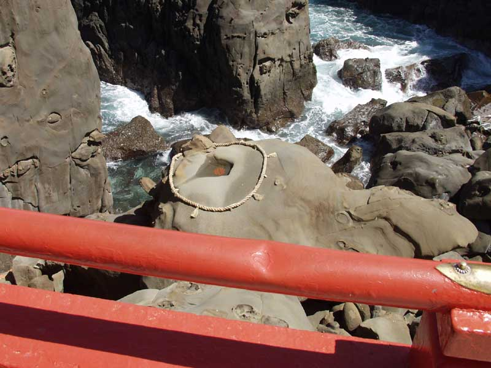
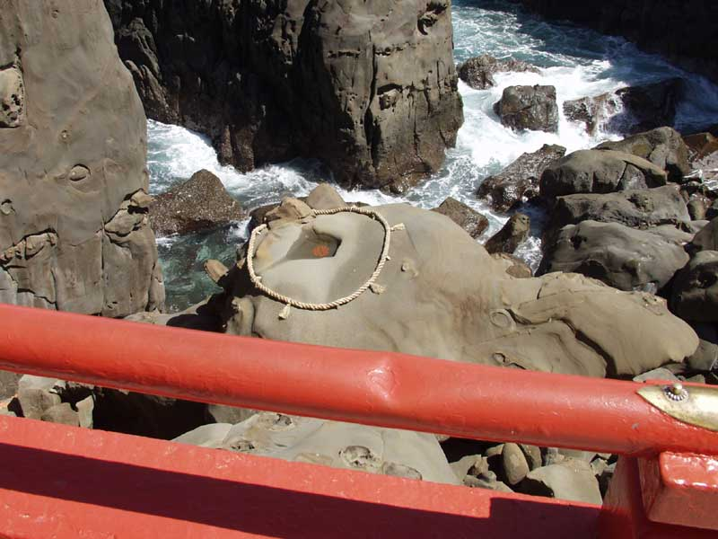

鵜戸神宮

鵜戸神宮

太平洋に面した断崖の中腹、洞窟の中に本殿が鎮座する全国的にも珍しい神社です。神話「海幸彦・山幸彦」の舞台としても知られ、縁結びや安産、育児にご利益があるとされています。本殿前の岩場にある「亀石」の窪みに「運玉」を投げ入れる願掛けも有名です。
基本情報
住所: 宮崎県日南市大字宮浦3232
アクセス: 宮崎空港から車で約45分 / JR伊比井駅または油津駅から路線バスで約20分、「鵜戸神宮」バス停下車後、徒歩約10分
開門時間: 6:00～18:00 (季節により変動あり)
料金: 境内無料
公式サイト: https://www.udojingu.or.jp/